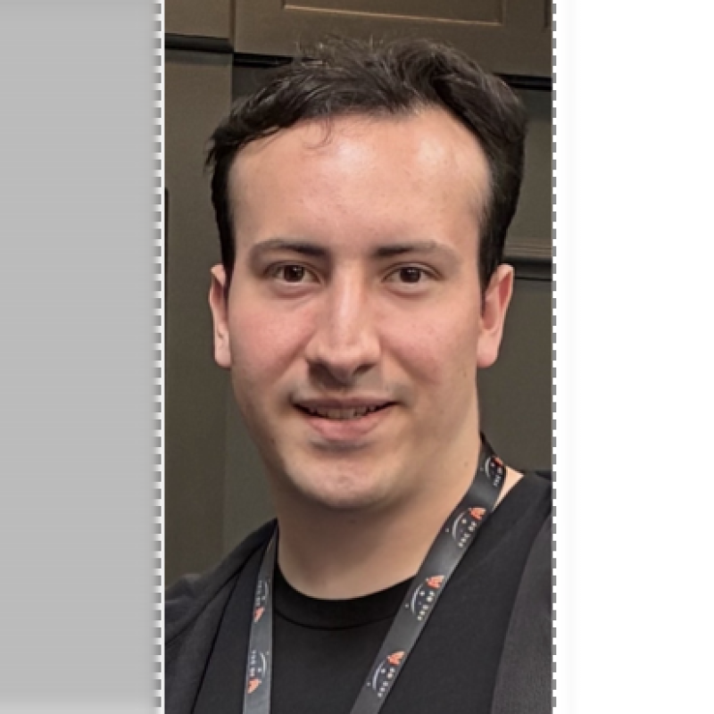

Matt Florez is a computer science student at Drew University. He is from Potomac, Maryland, located just outside of Washington DC.
He is an Eagle scout and has been heavily involved in programs like Venturing, Sea Scouts, Catholic Scouting, Conservation Scouting, and STEM Scouting. He is also a Brotherhood member of the Order of the Arrow.
In April of 2026, Matt attended the Arc of AI Conference in Austin, TX. After returning, he gave the Garden State JUG a presentation of what was covered at the conference and gave us a demonstration of the capabilities and limits of AI through a facial recognition / phone calling system.
Since July of 2026, Matt has been the Technical Research Fellow for the Garden State JUG and works on research topics from guest speakers prior to their scheduled talks.